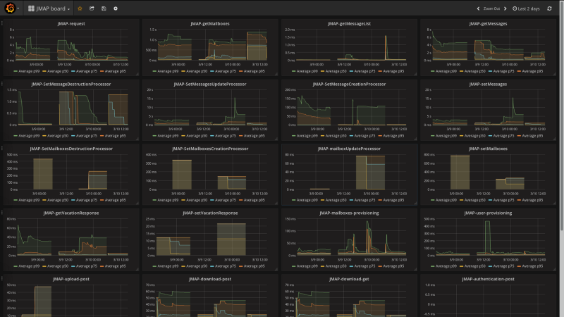

In mail servers, performance do matters. Users expect good, and fast responding commands. Thus performance is a priority concern for Apache James developers.
As part of our work on the project, we need rock-solid tools to benchmark our software. And this across all protocols (JMAP, IMAP and SMTP). We used third-party Gatling load testing implementations for :
Load testing was conducted both on top of JPA and Cassandra + ElasticSearch implementations. We succeeded to support 1.000 Thunderbird like users on top of both backends.
The following results were obtained on a server with an Intel Xeon CPU (E3–1231 3.40GHz 4 cores 8 threads) with 32 GB of RAM. We run Gatling on the same host, thus it has performance impact on the results. So far Gatling is run manually when we take time for it. This might eventually become part of our CI.
Additionally, we added metrics a bit everywhere in James using the brand new metrics API. We collect and export everything in ElasticSearch using Dropwizard metrics. Then we graph it all using Grafana. This allows us to collect all statistics and percentiles. Boards can be downloaded here.
More details on metrics are available on the metric page.
James can spool more than 65 mails per second (configured with Maildir mail storage and the FileMailQueue).
We ran some SMTP Gatling load testing during 5 minutes (https://github.com/linagora/james-gatling)
sbt gatling:testOnly org.apache.james.gatling.smtp.scenari.NoAuthenticationNoEncryptionScenario
The result was:
We thus have a throughput of more than 65 mails/second.
These numbers are obtained with the out-of-the-box configuration (not optimized), on a HDD disk. Better performance is expected with better hardware and further JVM tuning (-XX:+UseParallelGC -XX:+AggressiveOpts -XX:+UseFastAccessorMethods).